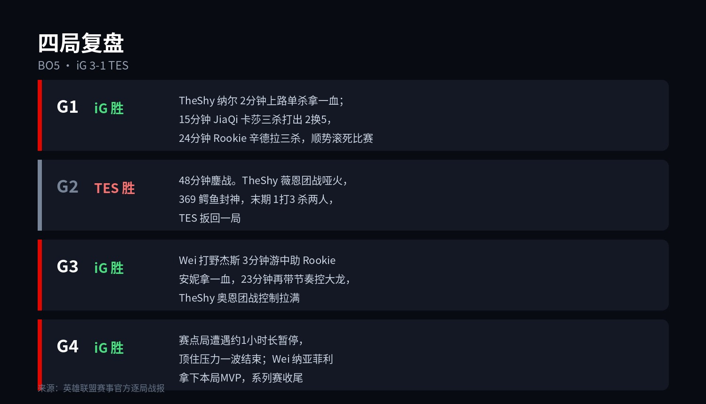

▲ S16 八强战报。数据来源：英雄联盟赛事官方
早上6点的闹钟，iG 替你按掉了 snooze 键。
3-1，TES 被送回家，iG 成为 S16 第一支打进四强的队伍。上一次他们站在这个位置，是 2019 年——七年了。
赛后的热搜很直白：#TheShy单杀369#。但这场球真正的发动机，另有其人。
01
四局棋，三种赢法

▲ 逐局战报。来源：英雄联盟赛事官方
第一局是 TheShy 的局。2 分钟，纳尔上路单杀安蓓萨拿一血，热搜就是这一刀砍出来的。15 分钟野区团战，JiaQi 的卡莎三杀，IG 打出 2换5；24 分钟 Rookie 辛德拉再拿三杀，比赛 30 分钟就没了悬念。
第二局是 369 的局。48 分钟的鏖战，TheShy 掏出上单薇恩但团战哑火，对面鳄鱼一夫当关，末期 1打3 还杀了两口。TES 扳平，那一瞬间 TES 粉丝是真的能看到希望的。
第三局和第四局，是 Wei 的局。杰斯游中帮 Rookie 的安妮拿一血，23 分钟再控大龙；赛点局纳亚菲利顶住一小时长暂停后的 nerves，一波结束。四局里 iG 赢下的三局，每一局的节奏都在他手里。
02
发动机叫 Wei
先报数据：四局合砍 17 / 10 / 36，英文流直接把系列赛 POM（单场最佳）给了他。
再看含金量：四局比赛，Wei 一个打野拿了三局的 MVP。第一局控图，第三局杰斯提速，第四局纳亚菲利收尾——369 被单杀是热搜，但决定这个系列赛走向的，是中路河道之间那个来无影去无踪的身影。
说句可能得罪人的话：TheShy 的单杀负责上热搜，Wei 的杰斯负责赢比赛。这分工，iG 粉丝应该很熟悉——2018 年那支冠军队伍，也是这么分工的。
03
TheShy：敢掏薇恩，也敢认错

▲ iG 上单 TheShy。图源：Liquipedia 选手资料图
赛后采访，TheShy 解释为什么掏薇恩：「369 选手是比较团队型的上单，英雄池偏向坦克，所以我选了把 VN。」
同一句采访里，他也一点没躲：「发条来上路那波我失误了，导致队伍落后。」
第二局薇恩哑火，第四局接着掏。被 369 的鳄鱼教做人之后，敢在赛点局把同一个英雄再拿出来——这份心里素质，比单杀本身更值钱。毕竟全世界的上单都在等他老，他已经把 S8 之后所有说"廉颇老矣"的稿子，全都撕了。
04
七年之约，兑现了
2565 天前，iG 上一次出现在 S 赛淘汰赛，还是瑞士轮回归的那个赛季；上一场四强，则要追溯到 2019 年。
这七年间发生过什么，老观众都清楚。重组、沉底、被人写进"隐退名单"。这届瑞士轮他们 3-1 出线，路上还干掉了 HLE——那是 LPL 本届第一次正面赢下 LCK 队伍。现在，第一支四强队。
赛后 iG 官方只说了一句话：「此役过后，我们的冒险仍在继续。」11月8日早上6点，半决赛，对手是 GEN 和 LYON 之间的胜者。
05
对账时间
赛前那篇我写的是「TES 3-2 iG」。比分错了，方向也错了，字面意义上的全错。
但这是我今年输得最开心的一次。因为更早的时候我说过：希望 iG 赢，押注 TES 赢。希望赢了押注，这大概是做 LPL 粉丝最好的那种输法。
接下来还有两场八强：明天 GEN vs LYON，后天 DK vs BLG。LPL 的四强名额已经到手一个，BLG 能不能把上限顶到两支，就看 Bin 的了。
七年，够一个冠军队隐退，
也够一支队伍重新走回来。
评论区聊聊：
这支队你守了几年？半决赛 GEN 或者 LYON，你觉得 iG 能过谁？
11月8日早上6点，继续定闹钟。
点个关注，S16 打到哪我跟到哪。
资料来源：英雄联盟赛事官方逐局战报、人民电竞、IT之家、直播吧、虎扑。数据截至北京时间11月4日。